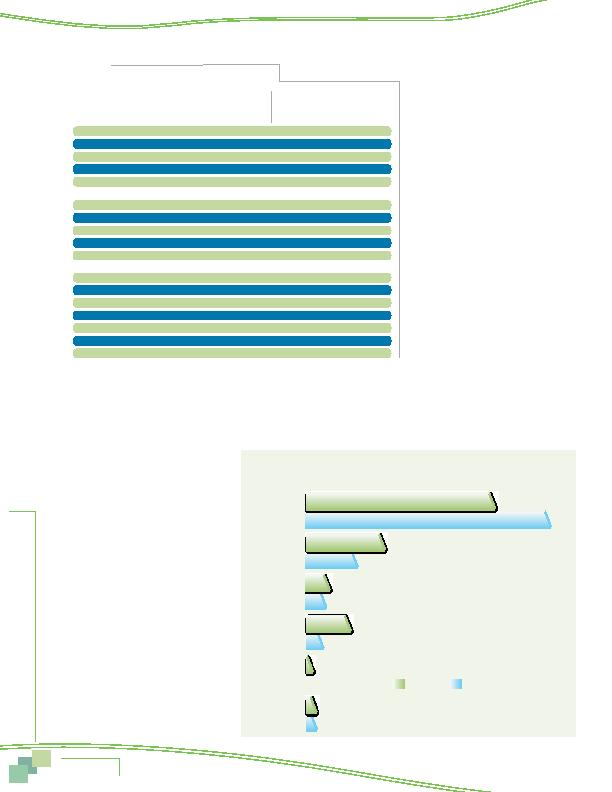

MWCOG-Comm
uter Conn
ecti
on
s-- 2010 State o
f th
e Comm
ute Report
5 0
Telecommuting by Employment
Characteristics
The survey data also showed some dif-
ferences in the telecommute and potential
telecommute distribution by employment
characteristics. These results are presented
in Table 22.
Private employers (28%), federal agen-
cies (27%), and non-profit agencies (26%)
had higher telecommuting rates than did
respondents who were self-employed (21%)
or employed by a state/local agency (13%).
Generally, use of telecommuting
increased with increasing employer size.
Three in ten respondents who worked for
employers with 1,000 or more employees
telecommuted and 28% of employers with
between 251-999 employees telecommuted,
compared with only 17% of respondents
who worked for employers with 26-100
employees. The exception to this rule was
for respondents who worked for very small
employers, those with 1-25 employees.
About 20% of these respondents said
they telecommute. This is likely informal
telecommuting, in which the employee
telecommutes under an informal agreement
between the employee and the supervisor,
rather than a formal telecommute program.
Some occupations had higher telecommuting rates than average, including technicians (37%), executive/managerial (36%), and
professional (28%). Three common occupations with below average telecommuting rates included administrative support (13%), service
(2%), and precision craft/production (3%).
Table 22 also illustrates the potential
for telecommuting among these employment
groups. Again, the relative percentages of
non-telecommuters who could and would
telecommute if given the opportunity
generally mirrored the relative percent-
ages of respondents who telecommuted in
each group. A few groups did have higher
potential than the 28% average for all non-
telecommuters, however.
Two groups with sizeable telecommuting
potential were respondents who worked for
federal government agencies and non-
profit organizations. More than a third of
non-telecommuters in these categories said
their jobs would allow them to telecommute
and that they would like to telecommute.
Similarly, potential appears to exist among
employers with 250 or more employees.
Over a third of non-telecommuters in this
group said they could and would telecom-
mute if given the opportunity.
Table 22
Telecommuters by Employment Characteristics
All Respondents
Non-Telecommuters
Employment
Percentage
Percentage Who
Characteristics
(n=___)* Who Currently
(n=___)** "could and would"
Employer Type
Telecommute
Telecommute***
Private employer
2,599 28%
1,854 27%
Non-profit org.
771
26%
571 33%
Federal agency
1,602
27%
1,180
35%
State/local agency
858
13%
772 19%
Self-employed
248 21%
190 22%
Employer Size
1 25
1,386
20%
1,112
23%
26 100
1,191
17%
989
26%
101 250
821
20%
651
26%
251 999
900
28%
669
35%
1,000+
1,603
31%
1,112
33%
Occupation
Technicians/related support 758
37%
573 32%
Executive, manager
1,288
36%
843 40%
Professional
2,322
28%
1,684
30%
Sales
274
21%
207 21%
Administrative support
680
13%
594
24%
Service
199
2%
196
12%
Precision craft, production
154
3%
148
8%
* All respondents in the group, both telecommuters and non-telecommuters.
** Respondents in the group who do not currently telecommute.
*** Respondents whose job responsibilities would allow telecommuting and who would be interested in
telecommuting, at least occasionally.
Figure 44
Sources of Information About Telecommute 2007, 2010
(multiple responses permitted)
55%
71%
23%
15%
7%
6%
13%
5%
2%
0%
3%
3%
2007
2010
Program at
work/employer
Word of mouth
Advertising
Other
Commuter
Connections
Initiated
on my own
Telecommuting